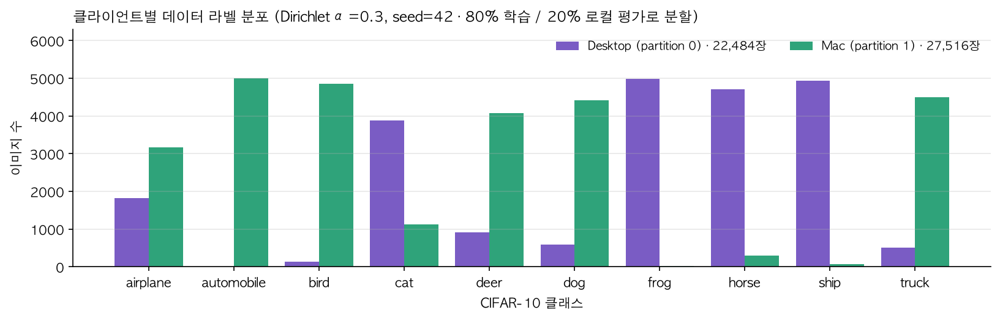
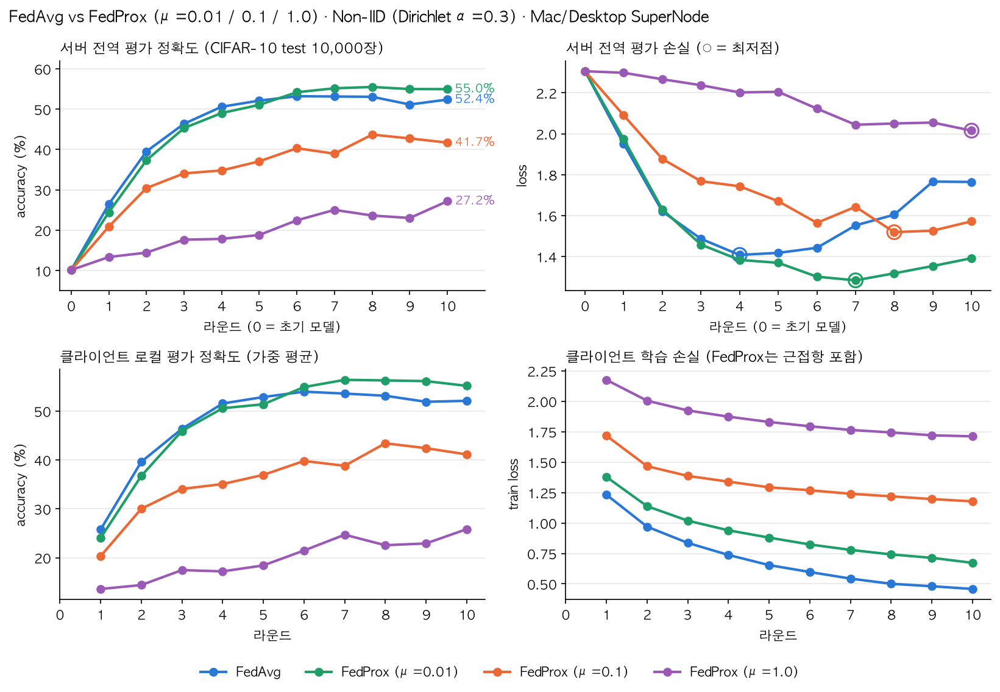

클라이언트마다 라벨 분포가 크게 다른 Non-IID 환경에서, 근접항(proximal term)을 추가한 FedProx가 FedAvg보다 수렴과 안정성이 나은지 확인한다. 또 근접항의 세기 μ에 따라 결과가 어떻게 달라지는지 본다.
| 항목 | 값 |
|---|---|
| 프레임워크 | Flower Deployment Engine (flwr run), 한 프로젝트(fedcompare)에서 run-config로 전략과 μ만 바꿈 |
| 구성 | SuperNode 2개: Windows Desktop(partition 0), Mac(partition 1) · Tailscale 연결 SuperLink: FedAvg, μ=0.1은 AWS EC2 · μ=0.01, μ=1.0은 Oracle Cloud A1(2 OCPU, ARM) |
| 데이터 | CIFAR-10 학습셋 50,000장을 Dirichlet(α=0.3, seed=42)로 2분할하고, 노드마다 80% 학습 / 20% 로컬 평가로 나눔 |
| 모델 | 간단한 CNN (Conv 2층 + FC 3층, PyTorch 60 Minute Blitz 기반), 초기 가중치 seed=42 고정 |
| 로컬 학습 | SGD (lr=0.01, momentum=0.9), batch 32, local epoch 3 |
| 연합 학습 | 10라운드, 매 라운드 2개 노드 전원 참여 (fraction-evaluate=1.0) |
| 비교 대상 | FedAvg (μ=0) vs FedProx (μ=0.01, 0.1, 1.0). 손실에 (μ/2)·‖w − wglobal‖²를 더함 |
| 평가 | 서버: CIFAR-10 test 10,000장 전역 평가 · 클라이언트: 로컬 20% 평가셋의 가중 평균 |
| 소요 시간 | FedAvg 7분 03초 · μ=0.1 6분 57초 (AWS) · μ=0.01 10분 18초 · μ=1.0 10분 16초 (Oracle) |
SuperLink 서버가 실험 중간에 바뀌었지만 코드, 시드, 설정은 같다. 네 실험 모두 0라운드(초기 모델) 정확도가 10.2%로 같아서 같은 초기 가중치에서 출발했음을 확인했다. Oracle 실행이 약 3분 더 걸린 것은 서버 사양 차이로, 학습 결과에는 영향이 없다.

그림 1. 두 노드의 라벨 분포가 거의 겹치지 않는다. Desktop은 frog·horse·ship·cat 위주이고 automobile은 4장뿐이다. Mac은 automobile·bird·truck·dog 위주이고 frog 22장, ship 69장, horse 295장으로 이 세 클래스가 거의 없다. 노드 하나만으로는 10개 클래스를 고르게 학습할 수 없는 강한 Non-IID 조건이다.

그림 2. 라운드별 서버 전역 정확도와 손실, 클라이언트 로컬 평가 정확도, 클라이언트 학습 손실
| 지표 (서버 전역 평가) | FedAvg | FedProx μ=0.01 | FedProx μ=0.1 | FedProx μ=1.0 |
|---|---|---|---|---|
| 최종 정확도 (R10) | 52.38% | 54.97% | 41.72% | 27.20% |
| 최고 정확도 | 53.21% (R6) | 55.50% (R8) | 43.70% (R8) | 27.20% (R10) |
| R6–R10 평균 정확도 | 52.59% | 54.97% | 41.49% | 24.28% |
| R6–R10 표준편차 (흔들림) | 0.78%p | 0.43%p | 1.69%p | 1.69%p |
| 40% / 50% 도달 라운드 | R3 / R4 | R3 / R5 | R6 / 못함 | 못함 / 못함 |
| 최저 손실 | 1.408 (R4) | 1.284 (R7) | 1.519 (R8) | 2.016 (R10) |
| 최종 손실 (R10) | 1.765 | 1.392 | 1.572 | 2.016 |
| 최저점 대비 최종 손실 상승률 | +25.3% | +8.4% | +3.5% | 0% (아직 감소 중) |
| 클라이언트 로컬 평가 최종 정확도 | 52.10% | 55.16% | 41.14% | 25.85% |
이번 설정(노드 2개, 전원 참여, 10라운드)에서는 FedProx(μ=0.01)가 FedAvg보다 최종 정확도가 2.59%p 높고 손실도 더 안정적이었다. μ=0.1 이상은 근접항이 너무 세서 정확도가 크게 떨어졌다. 따라서 이 모델에서 FedProx를 쓴다면 μ를 0.01 근처의 작은 값으로 잡아야 한다.
원자료: ~/FL/NonIID/results/noniid_fedavg.json, noniid_fedprox_mu0.01.json, noniid_fedprox_mu0.1.json, noniid_fedprox_mu1.json · 그래프 코드: ~/FL/NonIID/plot_compare.py · 라벨 분포: fedcompare.task.label_hist로 재계산